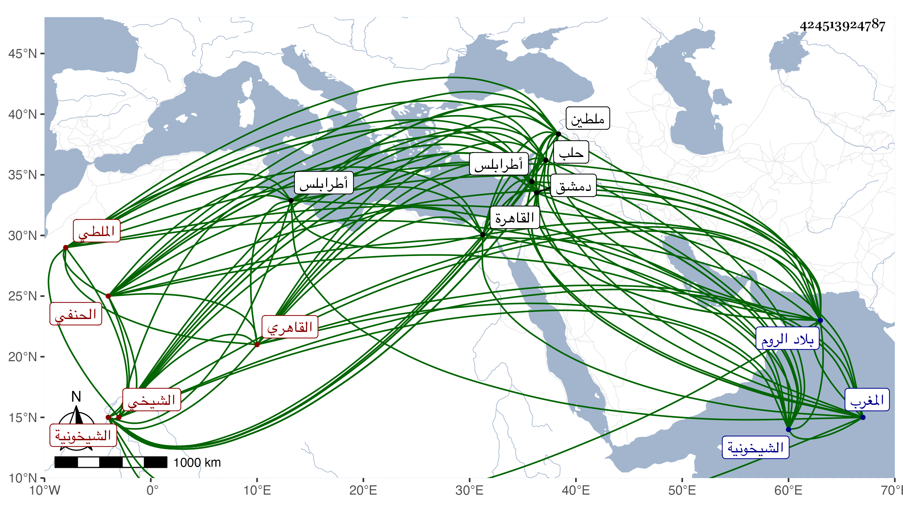

0902Sakhawi.DawLamic.ITO20230111-ara1.EIS1600.424513924787
Biography ID: 424513924787
82
عبد الباسط بن خليل بن شاهين الشيخي الأصل الملطي ثم القاهري الحنفي نزيل الشيخونية . ولد في رجب سنة أربع وأربعين وثمانمائة بملطية ، ونشأ بها وبحلب ودمشق فقرأ في دمشق بعد بلوغه القرآن ببعض القراءات ثم حفظ منظومة النسفي والكنز ونصف المجمع وأقرأه أبوه الكثير ، وحضر دروس قوام الدين وحميد الدين النعماني وغيرهما من علماء مذهبه وغيره وقرأ على جماعة من فضلاء الروم كالعلاء الرومي قاضي العسكر بها في دمشق والبرهان البغدادي في طرابلس وقدم القاهرة فلازم النجم القرمي في العربية والمعاني والبيان والشرف يونس الرومي نزيل الشيخونية في المنطق والحكمة والكلام بل المحيوي الكافياجي حتى أخذ عنه كثيرا وحضر دروسه في علوم جمة وكتب جليلة وحمل عنه أيضا كثيرا من رسائله وأجاز له الشمني وابن الديري وآخرون ، ودخل المغرب فأخذ دروسا في النحو والكلام والطب بل أتقنه بخصوصه مع جماعة وممن لقيه هناك أبو عبد الله محمد الزلدوي أحد الآخذين عن ابن عرفة ، وبرع في كثير من الفنون وشارك في الفضائل وألف ونظم ونثر وأقبل على التاريخ واستمد فيه مني كثيرا وتردد إلي له ولغيره من الدروس ، وهو إنسان ساكن أصيل منجمع عن الناس متودد سمعت من نظمه وفوائده بل امتدحني بما كتبه لي بخطه .
